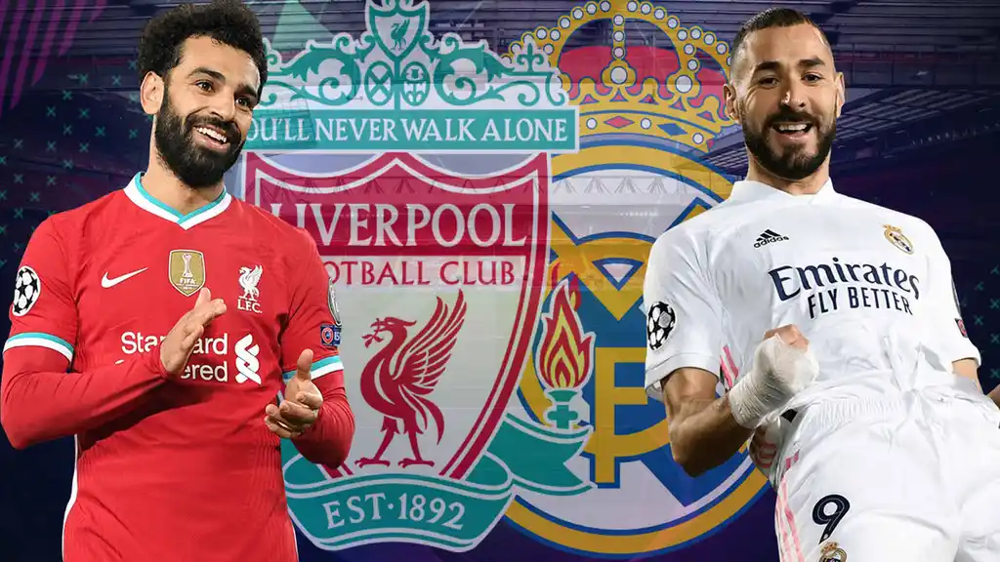
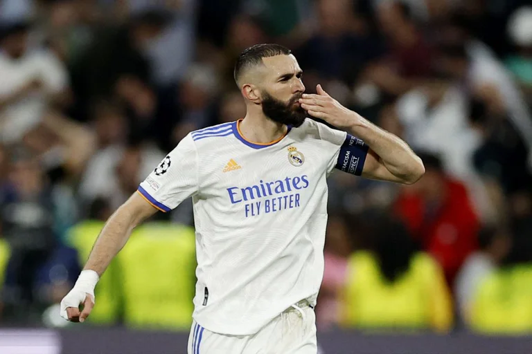

Final de la UEFA Champions League
La final se realizara el 28 de Mayo a las 2:00 Pm
El conjunto inglés, finalista en tres de las últimas cinco ediciones, busca su séptima Orejona y así igualar al Milan, segundo en la tabla histórica. El Real Madrid, de la mano de un Karim Benzema arrollador, jugará su final número 17 y su registro en esta instancia es impactante: ganó 13 y perdió tan solo 3. Y, justamente, una de esas tres fue ante el Liverpool.
La disputa sera en París luego de mucha historia
Hace 41 años se enfrentaron estos dos equipos e una final en paris la cual gano el liverpool por un tanto contra cero, el próximo 28 de mayo el escenario será el Stade de France, En aquella oportunidad el encuentro habia sido en el parque de los principes.
Historial entre el Real Madrid y el Liverpool en los ultimos tiempos:
- 2020/21, cuartos de final: victoria 3-1 del Madrid en el Santiago Bernabeu y empate sin goles en Anfield.
- 2014/15, fase de grupos: triunfo del equipo español 3-0 como local y 1-0 de visitante.
- 2008/09, octavos de final: victoria de Liverpool 1-0 en España y 4-0 en Inglaterra.